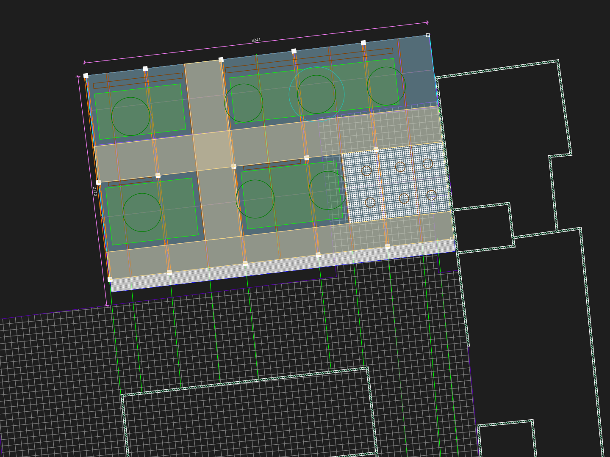

חלופה א' – סככת זכוכית ועץ במרכז הכרמל
פרטי בניין | חלופה תכנונית ראשונית להצגה למנחה

תכנית האתר עם החלופה (מתוך קובץ האוטוקאד, שכבות P-*)
הרעיון
האתר הוא השטח הפתוח בקצה מרכז הכרמל (כ-32.4×21.7 מ'), שהיום כמעט לא משמש. אנחנו ממשיכים את הגריד הקונסטרוקטיבי הקיים של המבנה לתוך האתר, ומעליו מציבים סככת זכוכית על מסבכי עץ – בהשראת Urban Garden (מקסיקו). מתחת לסככה נוצר פארק מוצל ומוגן מגשם, שמחבר בין הסככה הקיימת, הבניין והרחוב.
הקונסטרוקציה – המשך הגריד הקיים
- כל הרכיבים יושבים על צירי הגריד הסגול (מפתחים של כ-3.3–3.6 מ', בזווית של הבניין).
- מסבכי עץ ראשיים על כל ציר שני, בכיוון צפון–דרום, ברווחים של כ-9–10 מ'.
- קורות עץ משניות על הצירים שביניהם, ופרופילי פלדה דקים על כל שורה – עליהם יושבת הזכוכית.
- עמודי עץ 40/40 עם טבעות פלדה, במפגשי הצירים – כמו בתמונת ההשראה.
החיבורים לסביבה
- דרום – לסככה הקיימת: קורת מרזב משותפת על קו הגריד; הגג החדש ממשיך את הקיים.
- מזרח – לבניין: הסככה נשענת על קיר הבניין בזיזים, ונפתחת אל המעבר לכניסה.
- צפון – לשפת האתר: הגג מגיע עד הקצה, ולאורכו ספסל ארוך שהופך את השפה למקום שהייה.
הפארק – מסודר לפי הגריד
- טיילת מרכזית צפון–דרום מהסככה הקיימת עד שפת האתר.
- מעבר מזרח–מערב מהצד הפתוח אל הבניין, ומעבר בדרום מהסככה הקיימת לכניסה.
- ארבע ערוגות גדולות עם עצים בתוך משבצות הגריד, וספסלים לאורך השבילים.
- רחבת ישיבה / בית קפה ליד הבניין – ממשיכה את מסורת בתי הקפה של מרכז הכרמל (גלויה, 1967).
- פתח בגג הזכוכית מעל עץ מרכזי – העץ יכול לגדול מעל הסככה.
למה זה עובד
- משתמשים בגריד הקיים – הסככה נראית כחלק מהמבנה ולא כתוספת זרה.
- הזכוכית מכניסה אור, העץ נותן חום, והצמחייה מצננת ומצלה.
- הופכים שטח מת ל"כיכר" ציבורית שמקשרת בין הרחוב, המרכז המסחרי והבניין.
שאלות פתוחות לשלב הבא
- גובה הסככה ומפלסי הקרקע באתר (שיפוע לכיוון הרחוב).
- ניקוז מי הגשם מגג הזכוכית – אל המרזב המשותף ולערוגות.
- הצללה בקיץ – זכוכית מודפסת או וילונות בד מתחת לגג.